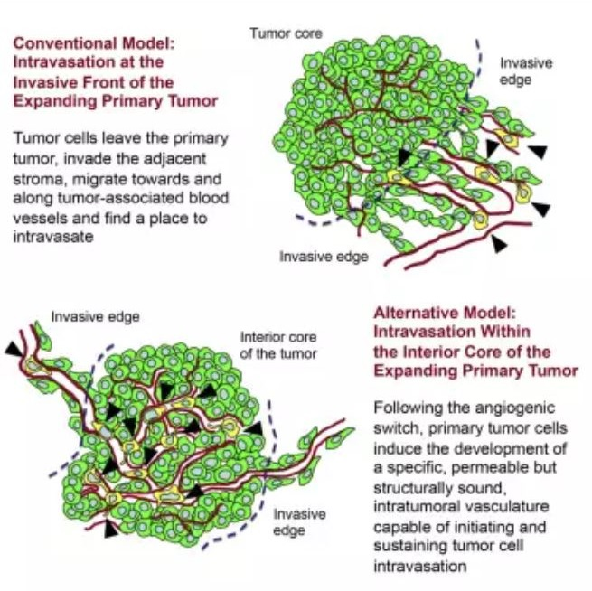

|
|
|


|
|
|||||||||||||
|
|||||||||||||
|
Cell子刊：为什么癌转移发生得比预期早？
发布时间：2019-12-6 11:55:50
来源：生物探索
对于癌症患者而言，最糟糕的状况莫过于癌转移，它是造成多数患者死亡的主要原因。即便经过一系列治疗后进入缓解期（remission），癌症也有可能“卷土重来”。
为什么一些癌症会在多年缓解期后再次复发呢？近日，来自于美国斯克利普斯研究所（TSRI）的研究小组在《Cell Reports》期刊发表最新文章，对这一疑惑进行了解答。
他们证实，侵入性肿瘤发生细胞转移的时间远远早于先前的研究。这些“逃逸”的坏细胞甚至会在原发性肿瘤被发现之前就进入血液循环，从而成为继发性肿瘤的“种子”，在多年后寻找机会“生根发芽”。
而且，他们发现，逃逸的肿瘤细胞主要通过肿瘤致密核心区的血管进入血液中。这一结论颠覆了传统的观念——转移的癌细胞来源于肿瘤的边界区域。
1肿瘤转移早于已有认知
肿瘤通常可分为4个阶段：0和1阶段的肿瘤多局限在原位，第2阶段的肿瘤会开始侵入相邻组织，肿瘤进入第3阶段意味着它开始朝着远距离组织转移，第4阶段是指继发性肿瘤已经发生。
但是，TSRI 的Elena Deryugina教授和William Kiosses教授共同带领团队却对癌症扩散的传统认知提出了不一样的结论。他们首次对整个肿瘤组织进行了研究，试图找到细胞逃逸的确切位置。以荧光蛋白标记人类肿瘤细胞，借助于高分辨率共聚焦显微镜技术，研究团队从肿瘤致密核心区到边界区域，绘制出包括血管在内的肿瘤三维图。
研究人员标记了每个肿瘤细胞相对于其最近距离的血管位置，这有利于他们分析出肿瘤细胞通过血管内渗（intravasation）实现转移的具体位置和路径。
结果发现，原发性肿瘤会在癌细胞浸润相邻组织之前就发生转移，且这一转移独立于浸润过程（invasion）。这一点可以解释“为什么继发性肿瘤常常比预期得要早发生”。
这意味着，即便是早期肿瘤患者，同样也存在癌转移的风险。
左图：红色血管交织于绿色肿瘤细胞之间。右图：研究团队绘制出白色肿瘤细胞进入血管的确切位置。相比于边界，更多的肿瘤细胞通过核心区域的血管进入血液循环。（图片来源于：Elena Deryugina and William Kiosses）
2癌细胞从核心区域逃逸
更意外的是，研发人员发现，绝大多数的肿瘤细胞穿透的都是位于肿瘤核心区域的血管。这与传统的认知相悖。
过去科学家们认为，肿瘤细胞通过内渗进入血液循环的过程，都发生于肿瘤浸润相邻组织之后。现在他们却发现，事实上，只有不到10%的逃逸细胞来源于浸润至相邻组织的肿瘤细胞。 
Deryugina认为，这一研究佐证了肿瘤核心区域新形成血管是肿瘤转移的理想通道。早在2015年，Deryugina团队就已经发现，肿瘤核心区域新形成的血管结构稳定且具有渗透性，是肿瘤细胞进入血液循环、转移至其他器官组织的良好路径。相比之下，肿瘤边界之处的血管并不那么“友好”，它们的血管壁相对较为成熟，不利于肿瘤细胞内渗。
研究人员还发现，EGFR蛋白是肿瘤细胞是否发生内渗的重要指标。这一表皮生长因子受体负责调控肿瘤生成血管的能力，从而影响癌细胞发生血管内渗的发生。“因此未来，我们或许可以利用EGFR蛋白监测癌症初期的发生趋势。”Deryugina表示。
这一最新发现对于癌症患者而言很重要，因为它意味着，原发性肿瘤不一定需要浸润实现转移。肿瘤浸润和内渗是两种相互独立的转移方式，所以医生或许需要重现评估癌转移的时间。
End
参考资料：1)At last, a clue to where cancer metastases are born
|
|